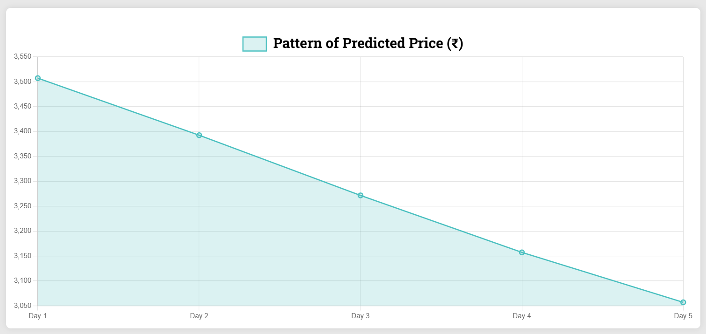
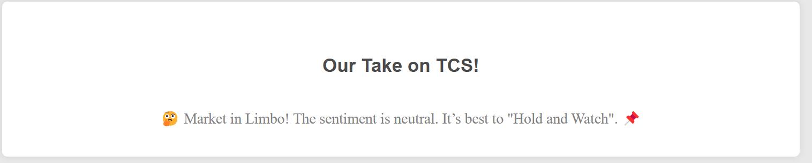
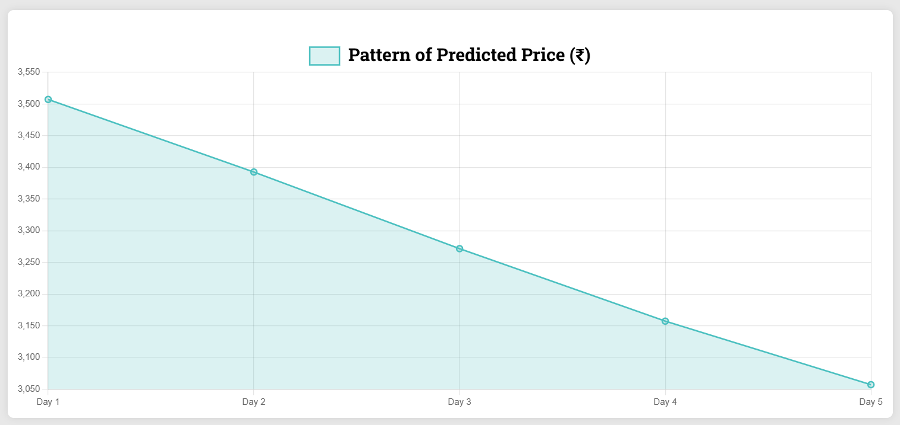
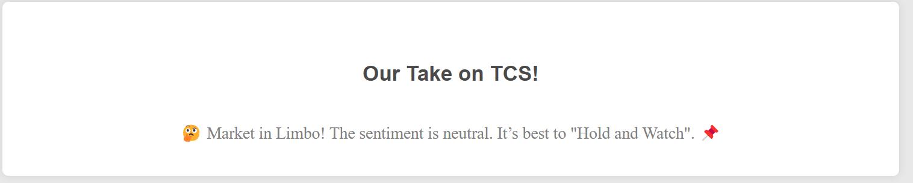

Domain: Sales & Marketing | Tool: Excel
Domain: Finance | Tool: Power BI
Domain: Finance , Machine Learning | Tool: Python

Domain: Machine Learning , Computer Vision | Tool: Python
Description
StockPulse is a Python-based data science project that combines deep learning and natural language processing to forecast stock movements. It leverages historical stock prices and real-time news sentiment to enhance prediction accuracy, offering a multi-modal forecasting framework.
Key Highlights:
Tools Used:
 

❯


❯
As an aspiring Data Scientist and Web Developer, I offer a wide range of services designed to help bring your ideas to life. While I am in the early stages of my career, I have worked on several projects and created impactful solutions, including custom web designs and data analysis projects.
Here are some of the certifications I’ve earned while building my skills in web development and data science.